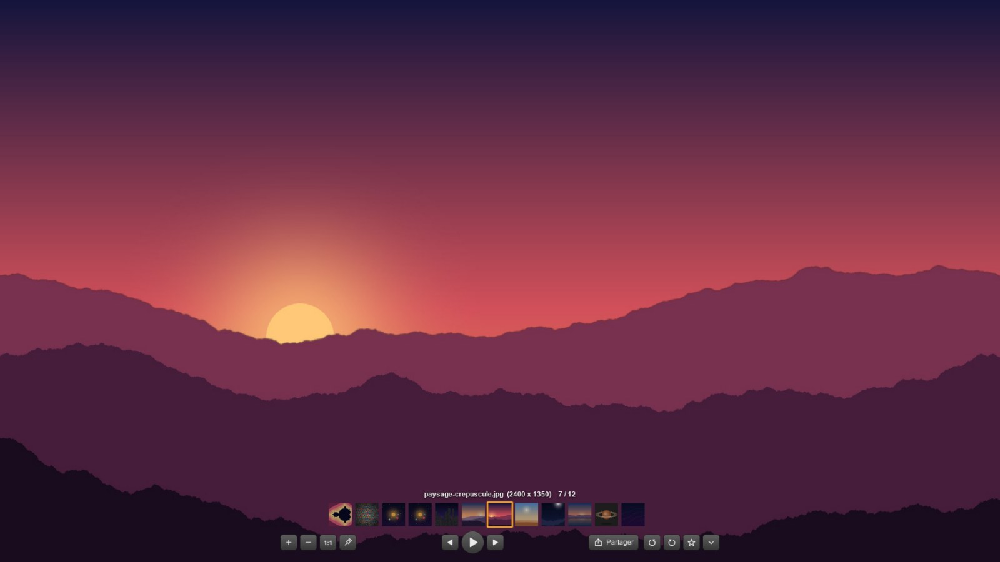
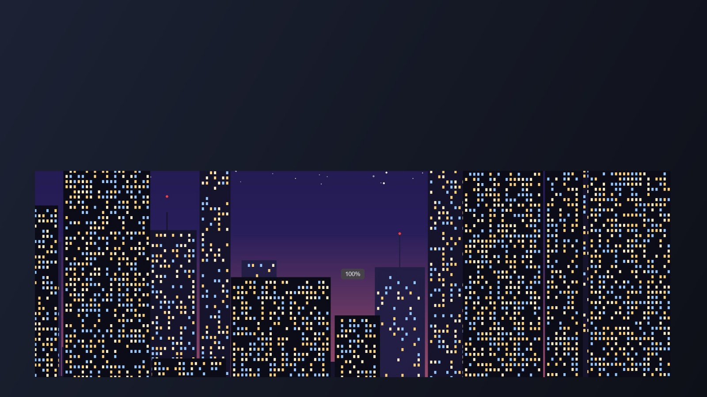
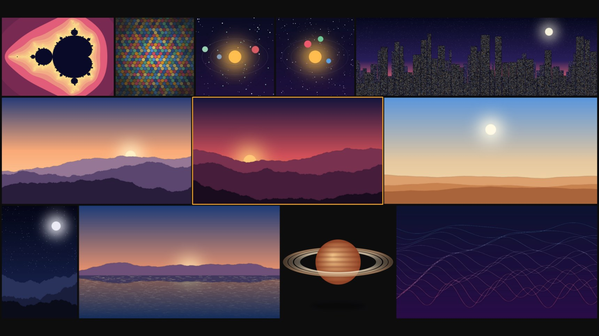
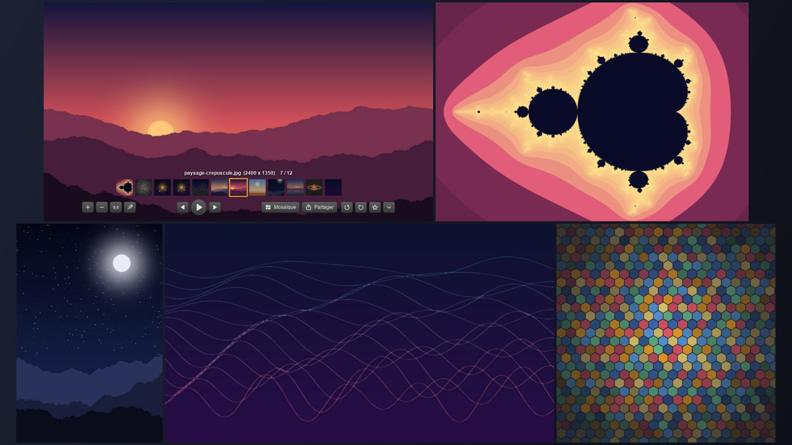
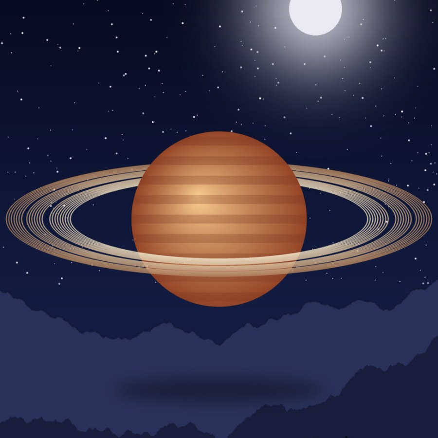
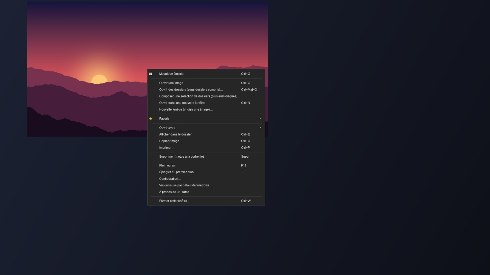
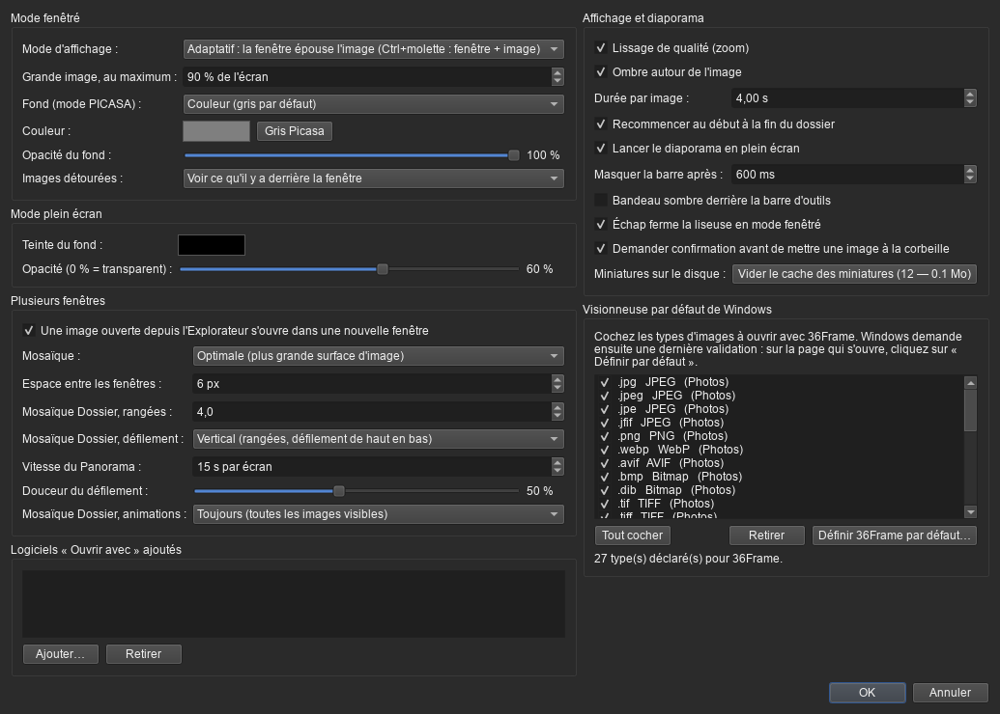

La fenêtre épouse l'image
Pas de cadre, pas de fond gris : seulement votre image, à sa taille réelle.
- Une grande photo est réduite pour tenir dans l'écran (90 % par défaut, réglable).
- La barre d'outils ne bouge pas d'une image à l'autre : enchaînez les photos à la molette sur les miniatures.
- Ctrl + molette agrandit ou rétrécit la fenêtre et l'image ensemble.
- Tirez un bord : l'image suit, en gardant ses proportions.
- Vous préférez l'ancien style ? Le mode PICASA (fenêtre fixe, fond gris) est dans la configuration.

Un zoom fluide et précis
Même une photo de 40 millions de pixels se zoome sans à-coup.
- Molette = zoom autour du curseur, animé, 12 % par cran.
- Une pastille affiche le pourcentage : 100 % = un pixel de l'image pour un pixel de l'écran, même avec la mise à l'échelle Windows à 125 ou 150 %.
- 1:1 pour la taille réelle, un second appui pour revenir à l'ajustement.
- Glissez l'image pour la parcourir quand elle est zoomée.
Mosaïque Dossier : tout un dossier d'un coup d'œil
Clic droit → Mosaïque Dossier (ou Ctrl+G) : toutes les images en plein écran, en rangées ajustées, sans rien recadrer.

Défilement amorti
La molette fait défiler la suite du dossier en douceur ; Ctrl+molette agrandit les vignettes. Vertical ou horizontal, au choix.
Panorama
Un bouton fait défiler les images toutes seules, à la vitesse choisie. L'écran ne se met pas en veille pendant ce temps.
GIF et WebP animés
Les animations bougent dans la mosaïque : toutes, ou seulement celle sous la souris. Décodées une seule fois, compressées en mémoire.

Plusieurs images côte à côte
Chaque image ouverte depuis l'Explorateur arrive dans sa propre fenêtre — un seul programme tourne.
- Le bouton Mosaïque range toutes les fenêtres à l'écran : optimale, en lignes, en colonnes, grille, cascade ou pêle-mêle.
- Clic molette sur une miniature : l'image s'ouvre dans une nouvelle fenêtre.
- Ouvrir une autre image prend environ 0,2 seconde : le programme n'est pas rechargé.

Les images détourées, posées sur votre bureau
Un PNG ou un WebP à fond transparent ? La fenêtre disparaît, seul le sujet reste.
- On voit ce qu'il y a derrière : bureau, autre application… (ou damier, au choix).
- Épingler au premier plan (bouton punaise ou T) : l'image reste au-dessus de tout, même d'un jeu en plein écran fenêtré.
- La fenêtre reste déplaçable en cliquant n'importe où sur l'image.

Vos dossiers, vos favoris, vos outils
- Plusieurs dossiers et leurs sous-dossiers réunis en une seule collection (sélection multiple dans la fenêtre de Windows).
- Favoris et dossiers de favoris à vous, chacun parcouru comme un dossier.
- Partager : e-mail avec la photo jointe, Discord, copier le fichier ou l'image.
- Ouvrir avec Paint, Photoshop, GIMP, Krita… détectés automatiquement.
- Diaporama, rotation, impression, suppression vers la corbeille (récupérable) avec Suppr.

Tout se règle
- Mode adaptatif ou PICASA, taille maximale, fond des images détourées.
- Teinte du plein écran, vitesse du diaporama et du Panorama, douceur du défilement.
- Visionneuse par défaut de Windows : cochez les formats (27 au choix), Windows demande une dernière validation d'un clic.
- Vider le cache des miniatures en un bouton.
Raccourcis
| Geste / touche | Effet |
|---|---|
| Molette sur l'image | Zoom avant / arrière autour du curseur |
| Molette sur les miniatures | Image suivante (vers l'arrière) / précédente (vers l'avant) |
| Ctrl + molette | Fenêtre et image grandissent / rétrécissent ensemble |
| ← → | Image précédente / suivante |
| Double-clic, F11 | Plein écran ⇄ fenêtré |
| 1 · 0 · W | Taille réelle · ajuster · fenêtre à la taille de l'image |
| Espace | Diaporama (Panorama dans la Mosaïque Dossier) |
| Ctrl+G · Ctrl+M | Mosaïque Dossier · mosaïque des fenêtres |
| T · Ctrl+D · Suppr | Épingler au premier plan · favori · mettre à la corbeille |
| Ctrl+O · Ctrl+Maj+O | Ouvrir une image · ouvrir des dossiers (sous-dossiers compris) |
Léger, rapide, et rien ne quitte votre PC
Aucune connexion internet
36Frame ne contacte aucun serveur : pas de compte, pas de statistiques, pas de mise à jour cachée. Réglages et miniatures restent sur votre PC.
Pensé pour les petites configurations
Ouvrir l'image suivante depuis l'Explorateur : ~0,2 s. Le cache s'adapte à la mémoire du PC, et une animation cachée se met en pause.
Rien à installer en plus
Installateur sans droits administrateur, ou version portable à décompresser (réglages rangés à côté de l'exe, rien ailleurs).
Télécharger
Windows 10 ou 11, 64 bits. Dans la page Releases :
| Fichier | Pour qui |
|---|---|
36Frame-Setup-x.y.z.exe | Installation classique (sans droits administrateur). Propose de faire de 36Frame la visionneuse par défaut. |
36Frame-Portable-rapide.zip | Sans installation : à décompresser où vous voulez (clé USB…). Aussi rapide que la version installée. |
36Frame-Portable.exe | Un seul fichier, sans installation ; un peu plus lent à l'ouverture de chaque image. |